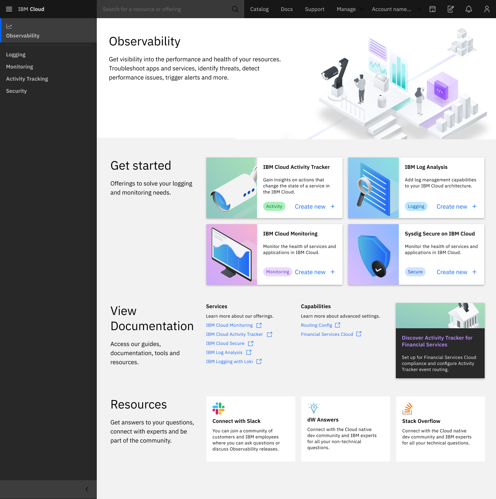
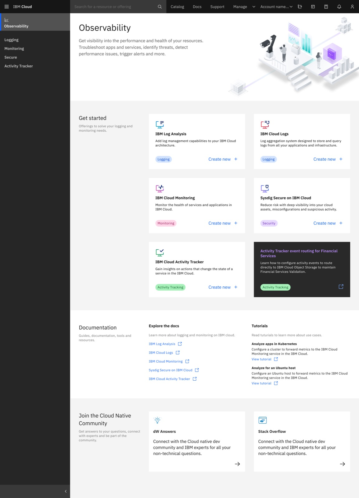
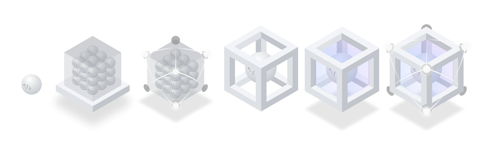
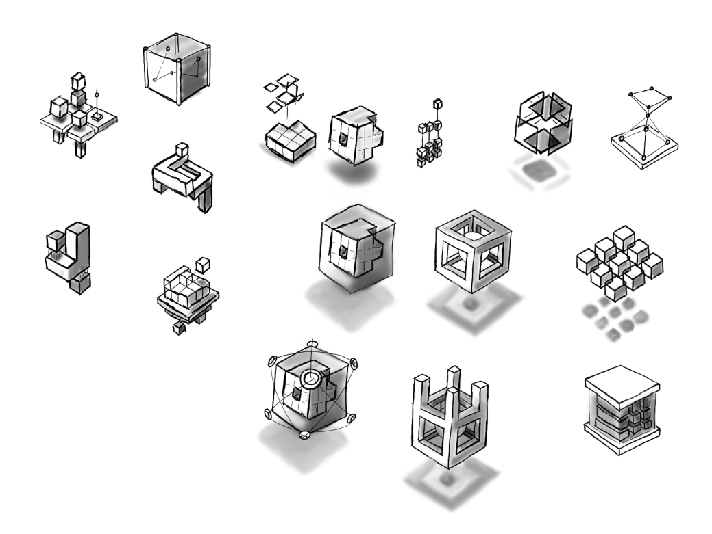
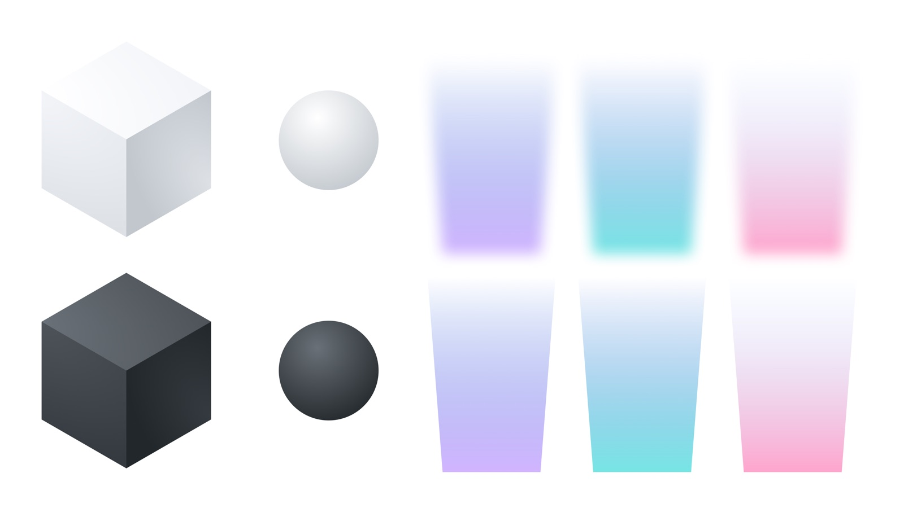
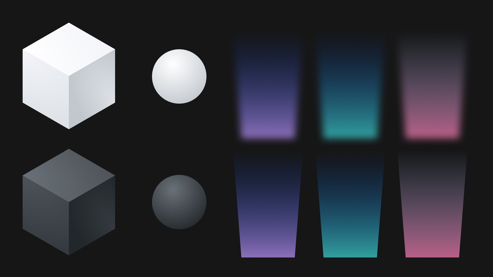

Product Design
IBM Cloud Observability
Three years on the Observability squad (2021–2024) shipping enterprise products for operators running workloads at scale — spanning Activity Tracker, Cloud Logs, Monitoring, Event Notifications, and the illustration system that gave it all a consistent voice.


IBM Cloud Activity Tracker
Activity Tracker was my entry point into the Observability portfolio. When our design lead left mid-2021, I stepped into an interim co-lead role — organizing the design repo, attending lead meetings, and facilitating cross-functional syncs while still ramping on the domain.
The routing work started as self-directed explorations: low-fidelity concepts for how operators could configure where audit events get sent. I co-hosted a Mini Design Jam to gather ideas from the broader team, and those early sketches fed into internal workshops that shaped the platform-level routing direction.
IBM Cloud Logs
Cloud Logs was the biggest design effort of my time on the squad. IBM partnered with an external vendor (Cx) whose product needed to be "blue-washed" — re-skinned to look and feel like a native IBM Cloud service using Carbon and Carbon for Cloud.
I led the UI design across the full release schedule: Preview, Experimental, and Beta. That meant working closely with the Cx team to review every screen, flag inconsistencies, and share IBM design system knowledge so they could build compliantly. I produced detailed deliverables at a level of depth the team hadn't done in previous re-skinning efforts.
I also created a series of technical diagrams for the documentation library and built assets used during live labs at IBM TechXchange. By the time I transitioned off the squad, Observability had grown into the second-largest revenue-generating product space in the portfolio.


D&UX Reviews — Monitoring, Logging & Security
Across the portfolio, I ran Design & User Experience reviews for three major product categories — Logging, Monitoring, and Security (Sysdig Secure). These weren't surface-level audits; each involved cataloging usability issues, presenting findings to senior leadership, and working with dev teams to resolve them.
The Monitoring heuristic evaluation stood out — I documented interaction and visual issues across instance details and dashboard interfaces, then proposed updates that fed into the team's improvement backlog. For Sysdig Secure, we conducted 9 user interviews and a full research synthesis, and roughly half the cataloged issues were resolved before the product even launched. Many of those fixes applied across all Observability services.
IBM Cloud Event Notifications
Event Notifications was where I got to pilot an entire project process end-to-end. The existing creation flow required users to complete three setup steps before they could even begin the actual task. I led co-design workshops to rethink it, and we consolidated everything into a single "fast track" flow.
The conditions builder — essentially a rule builder, similar to how email filters work — turned out to be one of the trickier interaction design problems I've worked on. Building something flexible enough to handle complex logic while staying intuitive taught me a lot about progressive disclosure and the pyramid principle.
I produced a high-fidelity prototype, prepared and moderated user testing sessions, synthesized the findings, and presented research to stakeholders. The work also resulted in a reusable component contributed to the Carbon for Cloud library — a connected experiences pattern that other teams could adopt.
Technical Storytelling & Illustration
Alongside shipping product, I contributed to IBM Cloud's illustration system from my first year on the squad. It started with world page illustrations for Observability and grew into co-leading a cross-team illustration workgroup with Developer Services — building guidelines, running design jams, and presenting the process to the Cloud PAL Design Guild.
By 2022, I was deconstructing the illustration system to build a reusable Figma kit — making it faster for other designers to create complex assets while staying compliant with the style guidelines. That kit and its documentation fed into the broader Cloud Pal 2.0 system now used across IBM Cloud. The work gave Observability products a consistent visual voice inside an otherwise dense enterprise console — empty states, onboarding moments, and brand illustrations that made the experience feel intentional.



